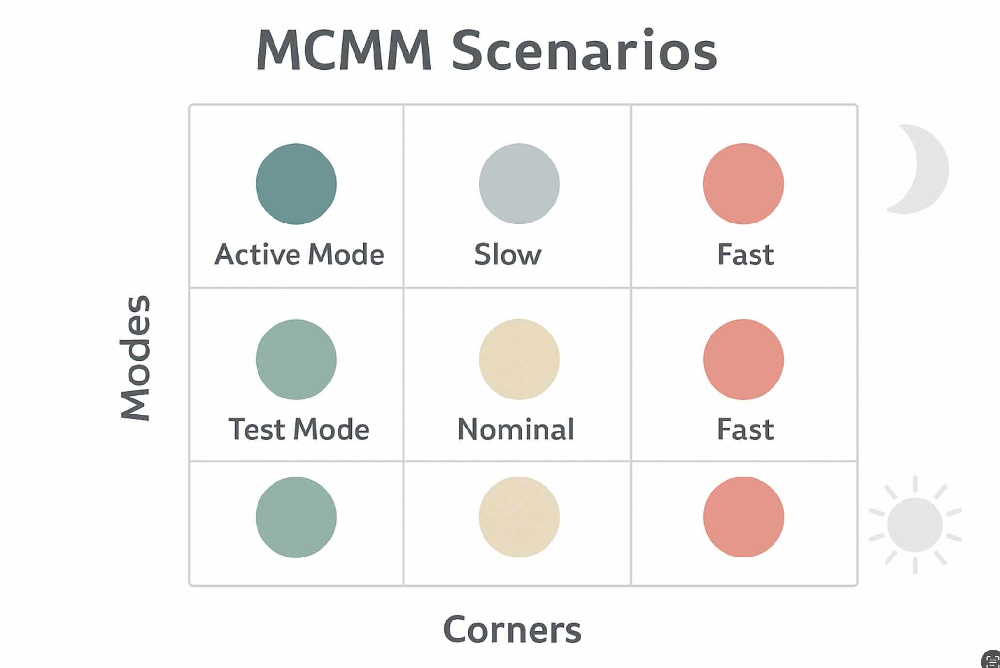
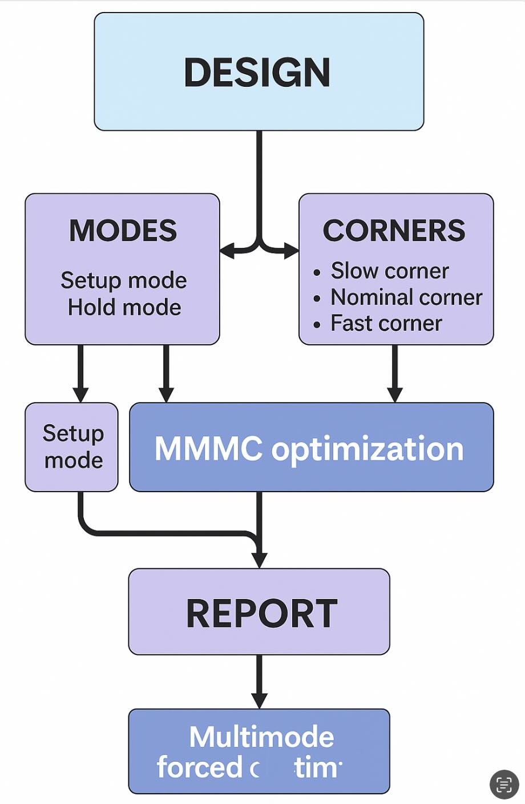
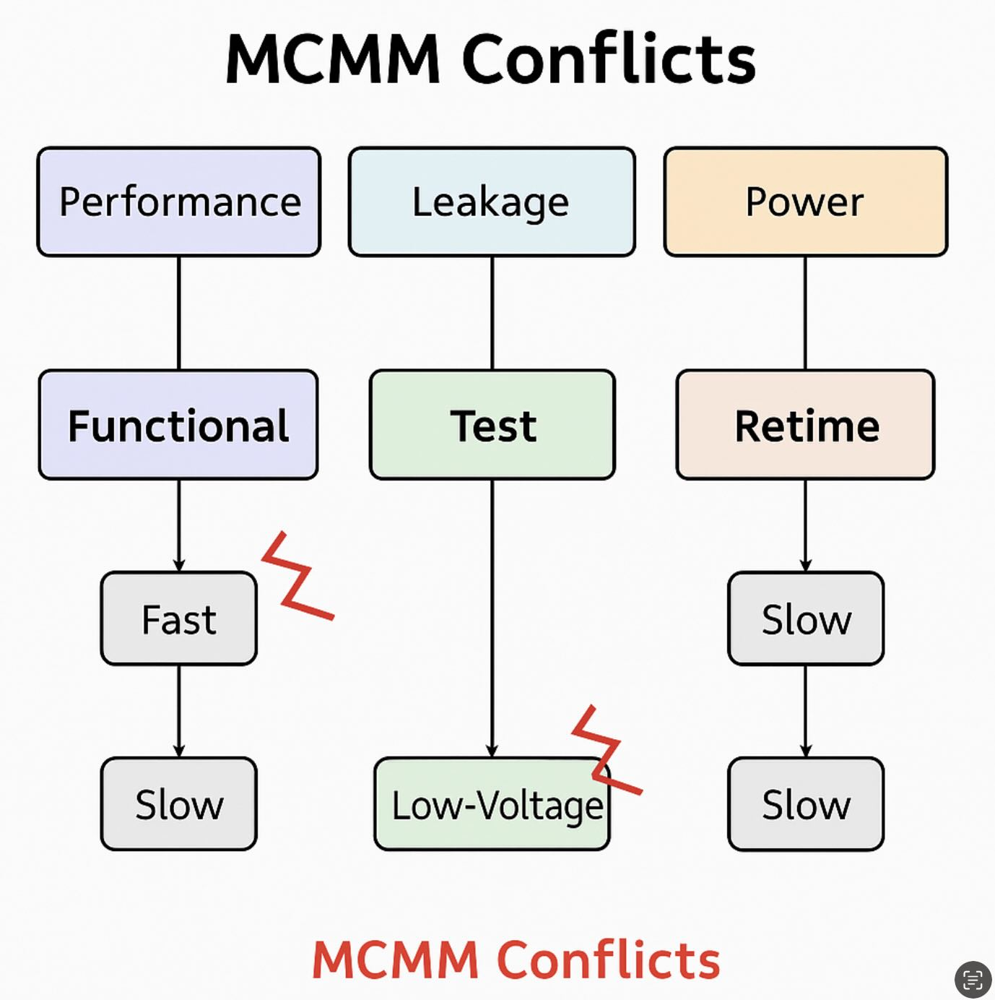

Introduction
Real chips don’t run at a single condition. Voltage droops, temperature swings, and process spreads change cell delays; meanwhile, your design operates in multiple modes (functional, scan, low-power…). Multimode Multi-Corner (MCMM) analysis models this reality by checking timing across many mode/corner combinations (scenarios) and optimizing for them together.
Why MCMM?
- Fewer late surprises: avoid “fixed at TT, broken at SS/FF”.
- Coherent decisions: sizing & buffering choices account for competing corners.
- Confidence at tapeout: reported WNS/TNS are true worst cases, not wishful thinking.

Modes & Corners: vocabulary
Modes
- Functional: normal operation (high frequency).
- Scan/Test: slower clocks, different constraints, case analyses on test ports.
- Low-power/Retention: gated domains, multipliers off, isolated IOs.
Corners (PVT)
- Process: SS (slow), TT (typical), FF (fast).
- Voltage: min/nominal/max supplies (IR-drop sensitivity).
- Temperature: cold/room/hot (mobility vs. threshold trade-offs).
Scenario design (views)
A scenario = one mode + one corner + one set of libraries and constraints. STA tools then compute slacks across all scenarios and report the worst. In open-source flows (without native “views” switching like commercial tools), we emulate scenarios by scripting loops.

OpenSTA: corners & modes
OpenSTA supports multiple corners and lets you switch constraints for each mode. Create separate SDC per mode (e.g., func.sdc, scan.sdc, lp.sdc)
and load Liberty files per corner.
# Define PVT corners and read timing libraries
define_corner tt ss ff
read_liberty -corner tt libs/sky130_fd_sc_hd__tt_025C_1v80.lib
read_liberty -corner ss libs/sky130_fd_sc_hd__ss_125C_1v60.lib
read_liberty -corner ff libs/sky130_fd_sc_hd__ff_n40C_1v95.lib
# Design
read_verilog build/top_netlist.v
link_design top
# Modes: read SDC per mode and sweep corners
foreach mode {func scan lp} {
reset_path -all
if {$mode == "func"} { read_sdc constraints/func.sdc }
if {$mode == "scan"} { read_sdc constraints/scan.sdc }
if {$mode == "lp"} { read_sdc constraints/lp.sdc }
foreach c {tt ss ff} {
set_current_corner $c
update_timing
report_checks -path_delay min_max -fields {slew capacitance} -digits 3 > reports/${mode}_${c}.rpt
report_worst_slack -max > reports/${mode}_${c}_wns_setup.rpt
report_worst_slack -min > reports/${mode}_${c}_wns_hold.rpt
}
}
Tip: Add derates/uncertainty per corner (e.g., on-chip variation) to make slack more realistic.
set_timing_derate -late -cell 1.03
set_timing_derate -early -cell 0.97
set_clock_uncertainty -setup 0.05 [all_clocks]
set_clock_uncertainty -hold 0.03 [all_clocks]
OpenROAD: running per scenario
OpenROAD’s optimization stages (resizer, CTS, routing) can be steered with your corner libs and per-mode SDCs. If native MCMM view management isn’t available, iterate through scenarios and collect worst-case slack before deciding fixes.
# Corners
define_corners tt ss ff
read_liberty -corner tt libs/sky130_fd_sc_hd__tt_025C_1v80.lib
read_liberty -corner ss libs/sky130_fd_sc_hd__ss_125C_1v60.lib
read_liberty -corner ff libs/sky130_fd_sc_hd__ff_n40C_1v95.lib
# Tech + design
read_lef tech/sky130.tlef
read_lef libs/sky130_fd_sc_hd/merged.lef
read_def build/top.def
link_design top
# Loop modes & corners (pseudo-MCMM)
foreach mode {func scan lp} {
read_sdc constraints/${mode}.sdc
# Example: size/buffer, then evaluate timing per corner
resize_design -setup
foreach c {tt ss ff} {
set_current_corner $c
report_checks -path_delay min_max -digits 3 > reports/or_${mode}_${c}.rpt
}
}
Playbook: fix setup at slow corners (SS/hot/lowV), hold at fast corners (FF/cold/highV), then re-balance.
Optimization strategies
- Cell sizing & buffering: primary lever for setup (late) paths.
- Useful skew: tweak clock arrival to relax hard endpoints (respect hold).
- VT/threshold swaps: HVT↔LVT to trade leakage vs. speed selectively.
- Retiming & logic restructure: for stubborn long paths.
- Physically aware fixes: detour reductions, layer upgrades, shielding, PG refinement.

Conflicts & trade-offs
- Setup vs. hold tug-of-war: speeding a path for SS may break hold at FF.
- Leakage vs. performance: aggressive LVT can pass timing but fail power budgets.
- Scan vs. functional: false/multicycle paths differ—double-check exceptions.
# Scan chain: multicycle and false paths
set_multicycle_path -setup 2 -from [get_ports scan_in] -to [get_pins *scan_flop*/D]
set_multicycle_path -hold 1 -from [get_ports scan_in] -to [get_pins *scan_flop*/D]
set_false_path -from [get_ports test_mode] -to [all_registers]
Runtime tips
- Start with a reduced scenario set (e.g., {func, scan} × {SS, FF}) to find hotspots fast.
- Cache parasitics and libraries; don’t re-extract unnecessarily.
- Automate a “worst-of” aggregator that merges WNS/TNS across reports.
- Promote only impactful scenarios to full sign-off (minor ones can be batched later).
Best practices checklist
- Separate SDC per mode; keep exceptions minimal and reviewed.
- Name corners consistently across tools.
- Add uncertainty/derates to reflect IR-drop/jitter/OCV.
- Fix holds at fast corners after setup is broadly clean.
- Track WNS/TNS per scenario in a single dashboard; time-stamp every run.
FAQ
How many scenarios do I need? Start small (2–4), then expand to your PDK’s sign-off matrix.
Do I need separate DEF per scenario? No—same layout; timing libraries & constraints change.
What’s the usual “worst case”? Setup: SS/hot/lowV. Hold: FF/cold/highV. But always confirm with your libraries.
You might also like